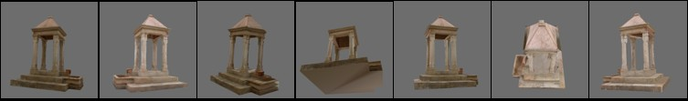

Tutorials in Computer Vision

Current version of the lecture notes [PDF]
Tutorial “Global Network Orientation by Synchronization” at ISPRS TC II Symposium, 2018
Tutorial “Structure from motion: historical overview and recent trends.” at ICIAP 2015
Lectures at the VIBOT Master (Le Creusot - FR, 2017)
Lecture at the International Computer Vision Summer School (Le Castella - IT, 2013)
Tutorial at VISMAC'12 (Genova - IT, 2012)
Lecture at "Scuola di fotogrammetria, computer vision e scansione laser" CISM (Udine - IT, 2010)
Lectures at the VIBOT Master (Le Creusot - FR, 2008)
Summer School of Information Engineering (Brixen - IT, 2007)
Tutorial at UCSB Interactive Digital Multimedia IGERT (Santa Barbara - CA, 2006)
Tutorial at VISMAC '06 (Palermo - IT, 2006)
Tutorial at DAGM '06 (Berlin - DE, 2006)
PhD course at the University of Padova, (Padova - IT, 2005)